Tawseef Masud · Civil Engineering Design Portfolio · University of Leeds
Design work for St George's Field.
Three group design projects for one historic site on the University of Leeds campus: a cable-stayed raised walkway, a sheltering pavilion and a replacement boundary wall. Each one was taken from site analysis and precedent study through to Revit models, construction details, cost estimates and foundation calculations.
| NAME | Tawseef Masud |
|---|---|
| COURSE | Civil Engineering, University of Leeds |
| MODULE | CIVE1665 Integrated Design Project |
| SITE | St George's Field, Leeds |
| tawseef.masud.career@gmail.com | |
| linkedin.com/in/tawseef-masud | |
| TOOLS | Autodesk Revit, hand sketching, physical modelling |
Selected projects — 2025/26

01 · Bridge / Structure
Raised Walkway
A cable-stayed route across the field to first-floor level of the Sir William Henry Bragg Building.

02 · Shelter / Building
Pavilion
45 steel columns and tinted glass panels arranged, in plan, as St George's dragon.
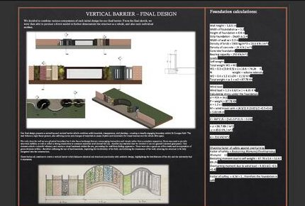
03 · Wall / Foundation
Vertical Barrier
A new design to fill a 20 m gap in the field's stone boundary wall, with foundation calculations.
Project 4 · Group project · Jan–Feb 2026
St George's Field Raised Walkway
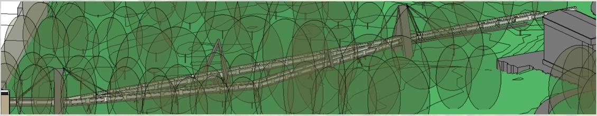
The brief
Design an accessible route across St George's Field, linking the existing path to first-floor level of the new Sir William Henry Bragg Building. The route has to rise over a protected masonry boundary wall without steps or steep ramps.
The constraints were a 2 m minimum clear width between handrails, no ground contact for 6 m from the building abutment, and an optional viewing platform no larger than 5 m².
Our response
We designed a gently graded cable-stayed walkway. Weathering-steel pylons carry stay cables down to a composite steel–concrete deck. The supports are a series of hollow triangular reinforced-concrete frames that echo the pylons.
Laminated toughened glass balustrades keep the views open across the field. A slight cross-fall drains water to slot drains at the deck edges, which controls ice and protects the concrete from freeze–thaw damage.
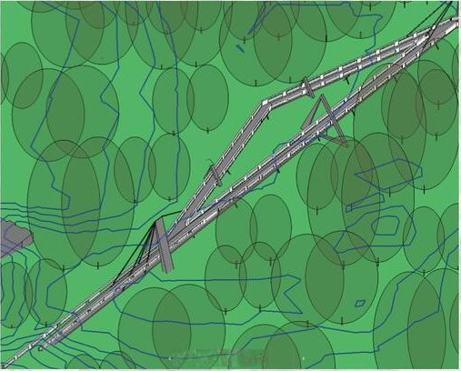

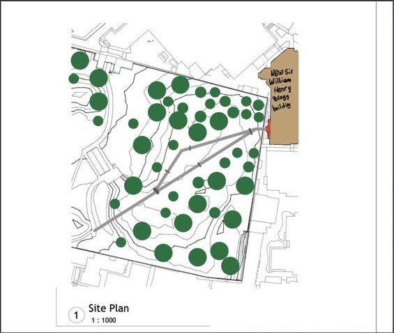
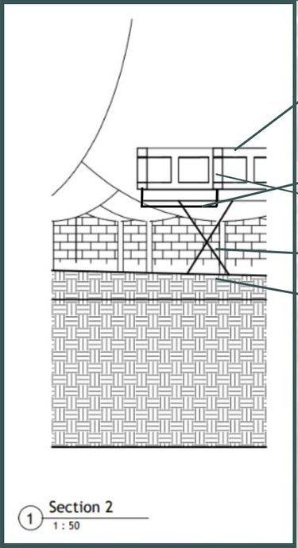
Structure & materials
- Pylons: weathering steel. It forms its own protective patina, so it needs no coating and less maintenance outdoors.
- Deck: steel beams with a concrete overlay, joined by welded shear studs so the two act as one composite section.
- Supports: hollow triangular RC frames. These save self-weight, can be inspected from inside and are bolted to the beams.
- Balustrade: laminated toughened glass on steel edge beams with mechanical clamps and a steel handrail.
- Foundations: concrete pads below each V-shaped steel column.
Construction sequence
- Prepare the site and cast the foundations for the deck and pylons.
- Erect and brace the weathering-steel pylons and primary members.
- Lift in the deck sections and fix them to the main structure.
- Install and tension the steel stay cables, anchored at the pylons.
- Fit the glass balustrade panels and the steel handrail.
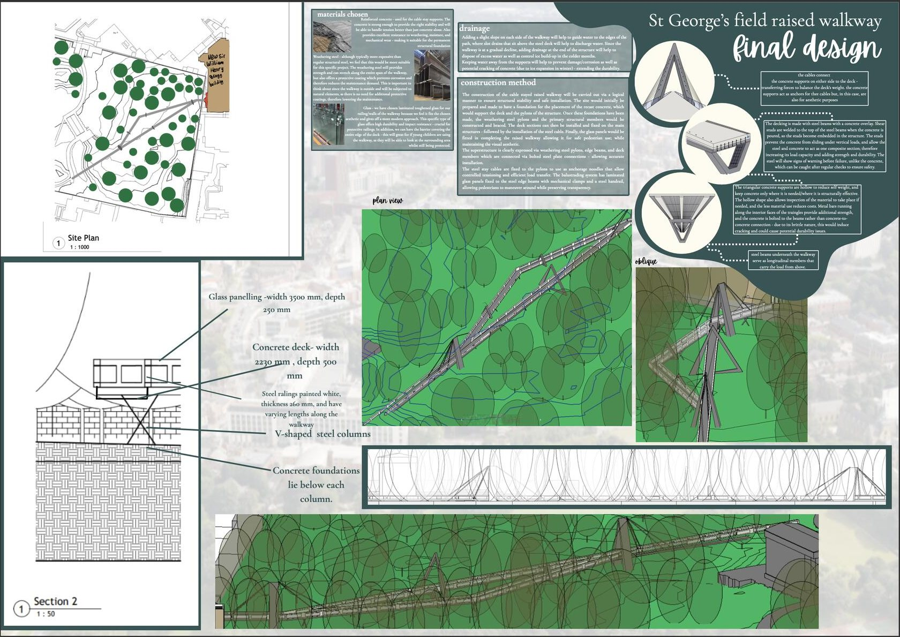
Project 5 · Group B3 · Feb–Apr 2026
St George's Field Pavilion

The brief
Design an outdoor shelter on one general level that protects people from rain and gives some shelter from wind, without being fully enclosed. The covered floor area could be no more than 60 m², and any level changes had to use ramps rather than steps.
Design concept
The site is named after St George, so we drew on his legend. In plan, the triangular roof panels are positioned to form a dragon. Underneath, a curved two-level concrete base is shaped like a couch, making a place to relax or study that is sheltered but still open to the field.
Tall roof panels, up to 7 m high, keep the space feeling open. A grid of 45 slender solid-steel columns gives a sense of safety and support.

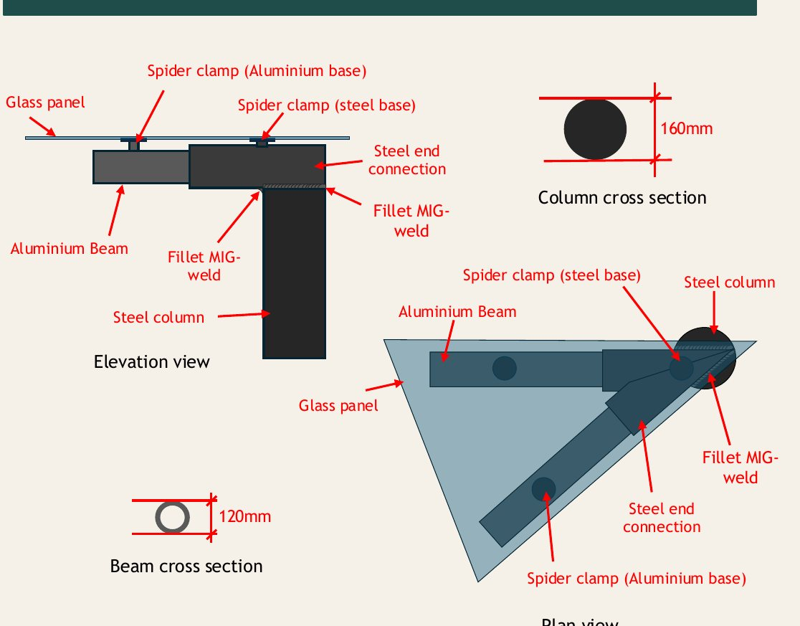
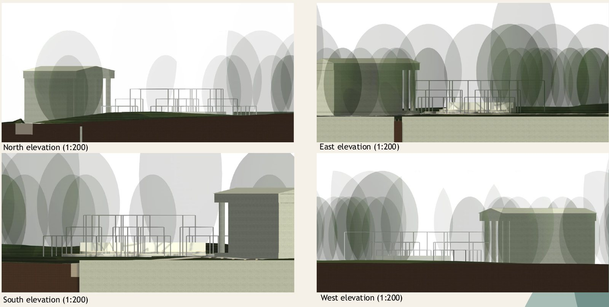
Construction method
- Soil investigation, vegetation clearance and safe excavation, including bore holes for the column foundations.
- Pour reinforced foundations, then place the precast concrete base. Precasting cuts embodied carbon, and steel connectors join the blocks.
- Place the precast back wall, set the columns through the base into their bore holes, and fit varnished timber seating panels.
- Weld aluminium beams with steel ends to the columns, then fix the glass panels with spider clamps. All steel gets an anti-corrosion coating.
Key details
- Canopy: tinted glass panels that absorb UV radiation, keeping the space underneath cool.
- Floor: two concrete levels at 450 mm and 900 mm, with timber panels raising seat height to 480 mm. Ramps are provided for access.
- Columns: solid steel, embedded 2000 mm into the ground to resist buckling and overturning.
- Form: triangular roof panels, which are inherently stiff and strong.
Material cost estimate
Reinforced concrete 464.1 m³ @ £200/m³ £92,817
Steel 4373.1 m³ @ £75/m³ £327,983
Aluminium 1.2 m³ @ £5,994/m³ £7,163
Spruce timber 7.7 m³ @ £800/m³ £6,139
Glass 334.4 m² @ £100/m² £3,344
TOTAL ESTIMATE £437,446
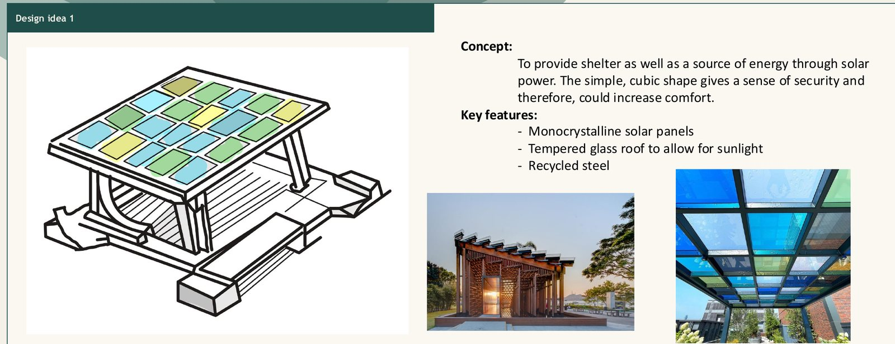
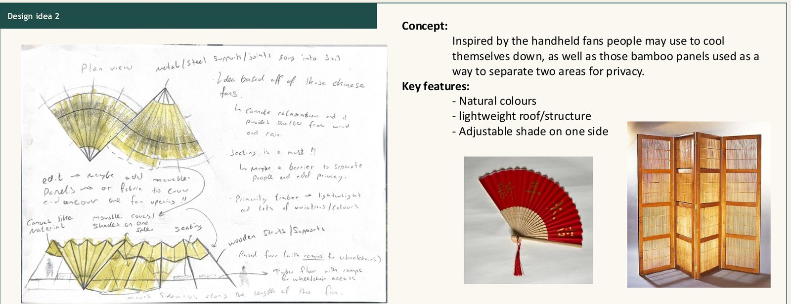
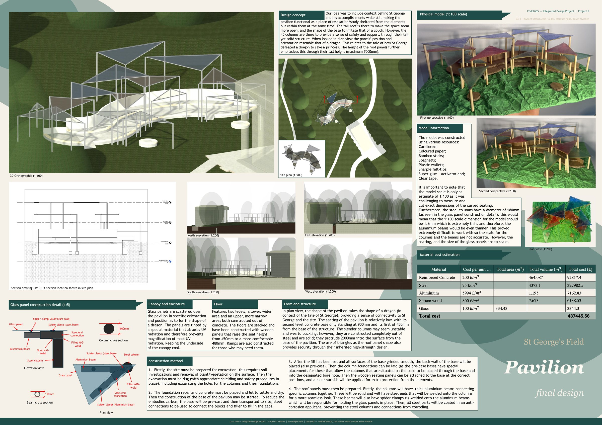
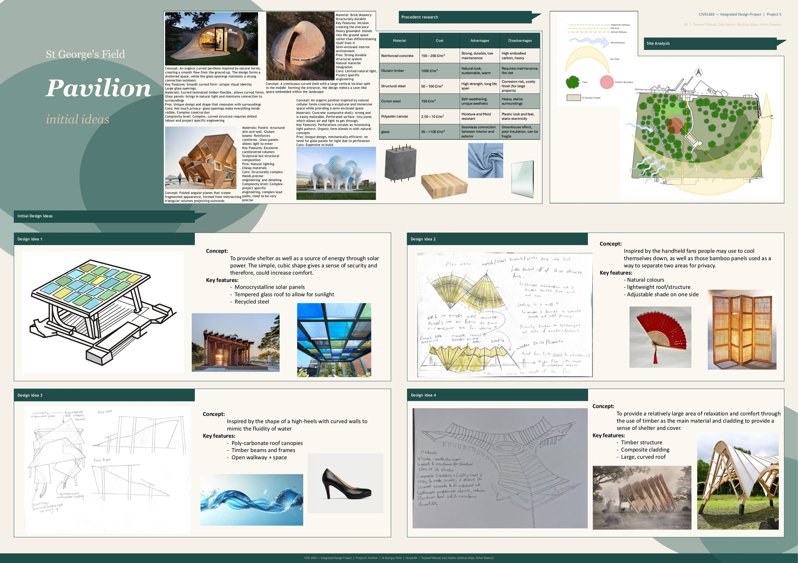
Project 3 · Group project · Nov 2025–Jan 2026
St George's Field Vertical Barrier
The brief
Part of the field's stone boundary wall has collapsed, leaving a 20 m gap. Rather than copying the original, the replacement had to express current technology, culture and design thinking.
It had to be 2.5–4 m tall, fit within a 20 × 5 m zone and have no openings. Its external face could be no more than 10° off vertical. The ground dips sharply at mid-length: the soil can safely bear 50 kN/m² at 1 m depth, and rock at 4.5 m can bear 250 kN/m².
Our response
Each team member developed an individual idea. We then combined the strongest parts of each into one final barrier, modelled it in Revit and developed it into a full presentation.
I produced an individual 2D Revit section through the wall and a foundation calculation. The calculation checks bearing pressure and overturning under the specified 1.2 kN/m² wind load.
Foundation calculation summary
Wall height ............ 3.025 m Strip foundation ....... 1.2 m wide × 0.4 m deep Self-weight (wall + footing) ≈ 87.8 kN Wind load .............. 1.2 kN/m² on the exposed face Max bearing pressure ... ≈ 97 kN/m² vs allowable 250 kN/m² ✓ OK Overturning: restoring moment ÷ overturning moment ≈ 4.5 > 1 ✓ STABLE
About
Engineering that starts with the site.
I'm a civil engineering student at the University of Leeds. These projects come from CIVE1665 Integrated Design Project, a year-long design studio. In it, small teams take a real campus site from analysis and precedent research through to scaled drawings, Revit models, construction details, costing and structural checks.
I enjoy the point where an idea has to become buildable: choosing a material for how it weathers, working out how one element connects to the next, and checking a foundation can actually carry the load.
Software
- Autodesk Revit
- Image editing for presentation boards
- Microsoft Office
Engineering
- Foundation design & bearing checks
- Wind loading & overturning
- Composite & cable-stayed structures
- Material selection & costing
Design
- Site analysis
- Precedent study
- Hand sketching
- Physical model making
Delivery
- A1 presentation boards
- Design reviews & crits
- Team collaboration
- Construction sequencing